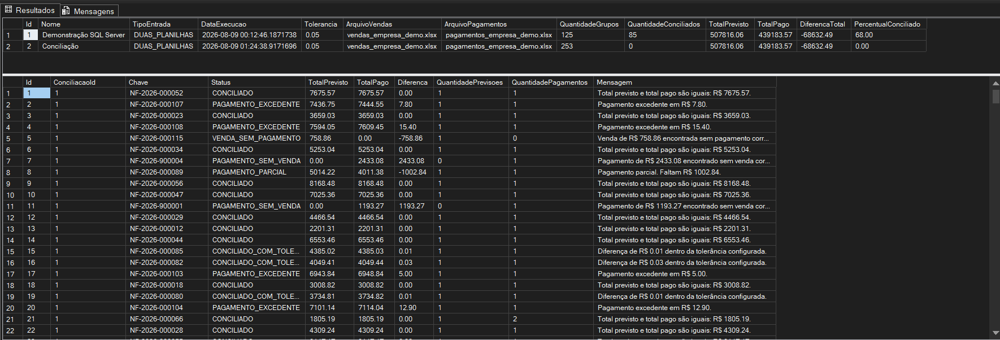

O problema
Conferir vendas e pagamentos manualmente aumenta o risco de erros, retrabalho e perda de tempo, principalmente quando os dados chegam em planilhas diferentes.
CASE DE SISTEMA FINANCEIRO COM PYTHON
Sistema para comparar vendas e pagamentos a partir de planilhas Excel, identificar divergências, gerar relatórios e manter histórico das execuções em banco de dados.

Interface publicada no Streamlit Community Cloud para demonstração do fluxo de conciliação.
VISÃO DO PROJETO
Conferir vendas e pagamentos manualmente aumenta o risco de erros, retrabalho e perda de tempo, principalmente quando os dados chegam em planilhas diferentes.
Importar os arquivos, mapear as colunas, aplicar regras de conciliação e gerar um resumo com diferenças, status e relatório final de forma automatizada.
Arquitetura em camadas, regras de negócio, processamento com Pandas, interface Streamlit, geração de Excel, testes e persistência com SQL Server.
FLUXO DA CONCILIAÇÃO
O sistema separa entrada, transformação, regra de negócio, apresentação e persistência para manter o fluxo legível e facilitar manutenção e evolução.
O usuário envia um único Excel com duas abas ou dois arquivos separados.
As colunas são associadas aos campos internos sem depender de nomes fixos.
Pandas e objetos de domínio transformam linhas em registros financeiros validados.
As chaves são agrupadas e os totais previsto e pago são comparados com tolerância configurável.
Métricas, tabela detalhada e relatório com abas Resumo e Resultados ficam disponíveis.
Na execução local, a conciliação e seus resultados podem ser persistidos no SQL Server.
RECURSOS PRINCIPAIS
Suporte a um arquivo com duas abas ou dois arquivos Excel independentes.
O usuário escolhe quais colunas representam identificador, cliente, data e valores.
Classificação de conciliado, tolerância, parcial, excedente, venda sem pagamento e pagamento sem venda.
Os cálculos monetários evitam o uso desnecessário de float para preservar precisão financeira.
Exportação automática com visão resumida e resultados detalhados em abas separadas.
Persistência das execuções e dos resultados usando SQLAlchemy ORM e relacionamento 1:N.
ARQUITETURA E TECNOLOGIA
A lógica de conciliação não depende diretamente de Streamlit, Excel ou SQL Server. A infraestrutura conecta o domínio aos recursos externos sem misturar responsabilidades.
Streamlit, upload, mapeamento, métricas, histórico e download do relatório.
Coordenação dos casos de uso de conciliação e histórico.
Entidades, enums, regras de classificação, totais e resumo financeiro.
Pandas, OpenPyXL, SQLAlchemy, pyodbc, SQL Server e geração de arquivos.
RELATÓRIO GERADO
O arquivo exportado possui duas abas: uma visão executiva do processamento e outra com cada chave conciliada ou divergente.
HISTÓRICO E PERSISTÊNCIA
A versão local pode salvar cada conciliação em dbo.Conciliacoes e os resultados relacionados em dbo.ResultadosConciliacao. O acesso é feito com SQLAlchemy e pyodbc, mantendo o banco fora da regra de negócio.
A demonstração pública no Streamlit Cloud roda sem banco persistente para manter a hospedagem gratuita. O histórico SQL Server permanece disponível no projeto local e no código publicado no GitHub.
INTERFACE E RESULTADOS
Clique em uma imagem para ampliar.
PROJETO DISPONÍVEL